Winx Club (conocido tambíen como Club Winx en algunos países) es una serie de televisión animada, coproducida por los estudios Rainbow S.r.l. y Nickelodeon. La serie fue creada y dirigida por Iginio Straffi.
Winx Club se originó en un episodio piloto no emitido, titulado Magic Bloom, escrito en 1999 y finalizó en 2001. Después de que Straffi rediseñó los personajes del piloto, la primera temporada comenzó la producción y eventualmente se estrenó el 28 de enero del 2004 en Rai 2 en Italia.
En el 2010, Nickelodeon anunció que estaría de regreso con la cuarta temporada completa de Winx Club y va a co-producir las próximas temporadas, hasta la séptima. En 2011, Viacom (empresa matriz de Nickelodeon) compró el 30% de Rainbow S.r.l.
musa
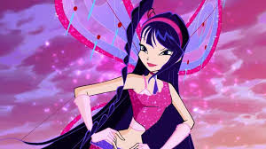 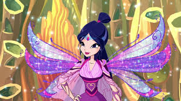 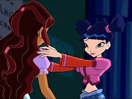 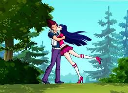
Le encanta la música, bailar, cantar y tocar todos los instrumentos, siendo su favorito la flauta de concierto. Musa suele tocar música increíble, pero toca mejor cuando está sola en Alfea, en un lugar tranquilo. Es la más vulnerable emocionalmente. Musa lo compensa poniendo una fachada dura. Su debilidad emocional es probablemente el resultado de la muerte temprana de su madre y la ausencia de su padre. Ella es también un poco solitaria y está enamorada de Riven.
layla
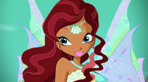 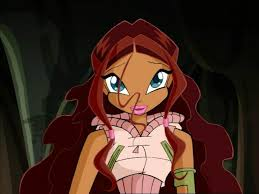 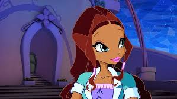
es muy obstinada y de mente abierta. Ella es tan intuitiva como Stella y cuando se le pregunta, da consejos prácticos. Ella es también una bailarina talentosa y habla muchos idiomas diferentes.Ella es independiente, encontrando que los chicos no valen la pena su tiempo. Ella se considera tan buena como los especialistas en los deportes y la lucha con espada y tiene intereses similares a ellos.
stella
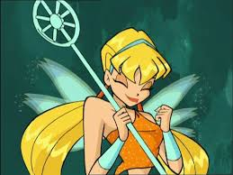 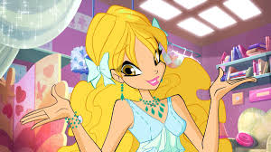 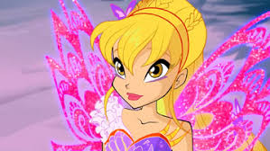
descrita como la hija del Sol y la Luna. Aunque Stella normalmente es orgullosa, se preocupa por sus amigas. Se mantiene siempre es muy fiel a sus amigos y hará cualquier cosa para mantenerlos a salvo. Stella siempre está sonriendo o contando chistes para alegrar a sus amigos cuando están tristes. En definitiva, Stella tiene una personalidad alegre y muy optimista. Además, es una fanática de la moda: qué ropa le sienta mejor y qué vestidos pegan más con su cara. No es una estudiante ejemplar, a veces va de compras en vez de estudiar o trabajar.
Bloom
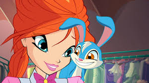 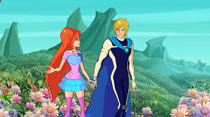
Bloom comenzó como una joven insegura en el comienzo de la historia a causa de la ignorancia que tenía en cuanto a sus verdaderos orígenes y sus extraños poderes, sin embargo, sorprendentemente potentes. Más tarde, a medida que aprendía más sobre la magia y ella misma, tenía cada vez más curiosidad por su pasado y quienes eran sus padres biológicos. Una escapista por naturaleza, tiene tendencia a huir cuando las cosas se ponen demasiado difíciles o confusas para ella, y también puede ser impaciente y testaruda, con un mal genio. Bloom también era impulsiva, a veces, lo que llevó a algunas experiencias muy malas tanto para ella y sus amigas. Su mayor fuerza y mayor debilidad era su estatus como la guardiana de la Llama del dragón.
Tecna
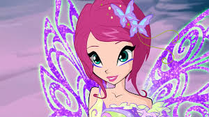 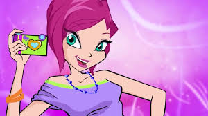 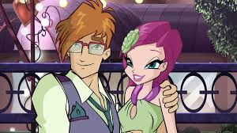
. Es muy inteligente y le encanta la tecnología. A veces se pone demasiado en la tecnología, y su entusiasmo con el mismo puede ser molesto. Ella es siempre práctica y lógica, a veces hasta la exageración. Ella también tiene una memoria fotográfica. Ella ama las computadoras y los videojuegos. Tecna también disfruta de hacer deporte y estar activa. Ella también tiene un fuerte vínculo con Musa. También le gusta Timmy, pero no sabe cómo decírselo.
 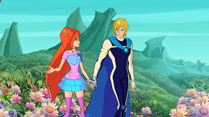
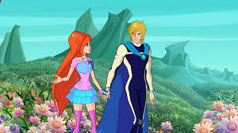